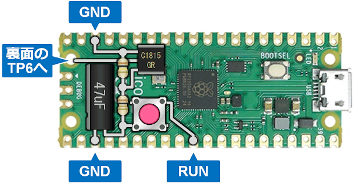
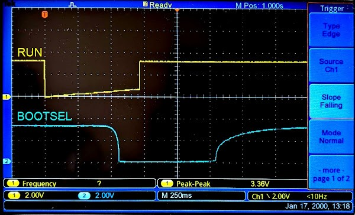

ラズピコに「長押し書き込みボタン」を追加する (pico2対応)
- 2024/09/29 : Raspberry Pi Pico2 でも同じ回路で動作することを確認しました。
概要
Raspberry Pi Pico のデバッグには picoprobe が便利ですが、作る物や環境によっては 繋いだままにできない場合もあります。しかしプログラムを書き込むたびに BOOTSELボタンを押しながら USBケーブルを差し込むのはちょっと面倒です。
RUNピンにリセットスイッチを追加し、BOOTSELボタンと同時押しすることで スイッチ操作のみで行うこともできますが、もうひと工夫してスイッチひとつだけで 操作できるようにしてみました。
ボタンをクリックすると通常再起動、0.5秒ほど長押しすると Mass Storage Mode に 入るようになります。押しやすい大きなボタンを乗せれば指一本で操作できて ちょっとした作業効率化になります。
回路
下図のような回路をラズピコに追加します。リード部品でも SMD でも OK です。 Raspberry Pi Pico でも Pico2 でも回路は同じです。

SW1 を押すと C1 を通して RUNピンがプルダウンされてリセットがかかります。 そのまま長押しし続けると C1 が充電されて Q1 のベース電圧が上昇していき、 Q1 がオンになると BOOTSELピンがプルダウンされます。 この状態で SW1 を解放するとリセットが解除され、Mass Storage Mode に 入るという仕組みです。
Q1 がオンになる前に SW1 を解放すれば通常のリセット (再起動) となります。
BOOTSELピンは Pico でも Pico2 でも裏面の TP6 に出ています。 少々不格好ですがここから引き出すのが簡単です。
実装例
Raspberry Pi Pico でも Pico2 でも接続方法は同じです。


動作波形
クリック時
RUN の立ち上がり時に BOOTSEL がバタついていますが、これはチャタリング等ではなく、ラズピコ自身によるドライブのようです。

長押し時
BOOTSEL はだいぶ鈍っていますが、RUN の立ち上がりではしっかり GND に落ちていて、ちゃんと Mass Storage Mode に入れます。

動作の様子
クリックでリセット、長押しで書き込みモードになるボタン、ラズピコ2 でも動いた #shapolab pic.twitter.com/i9PjJOSfre
— シャポコ🌵 (@shapoco) September 15, 2024